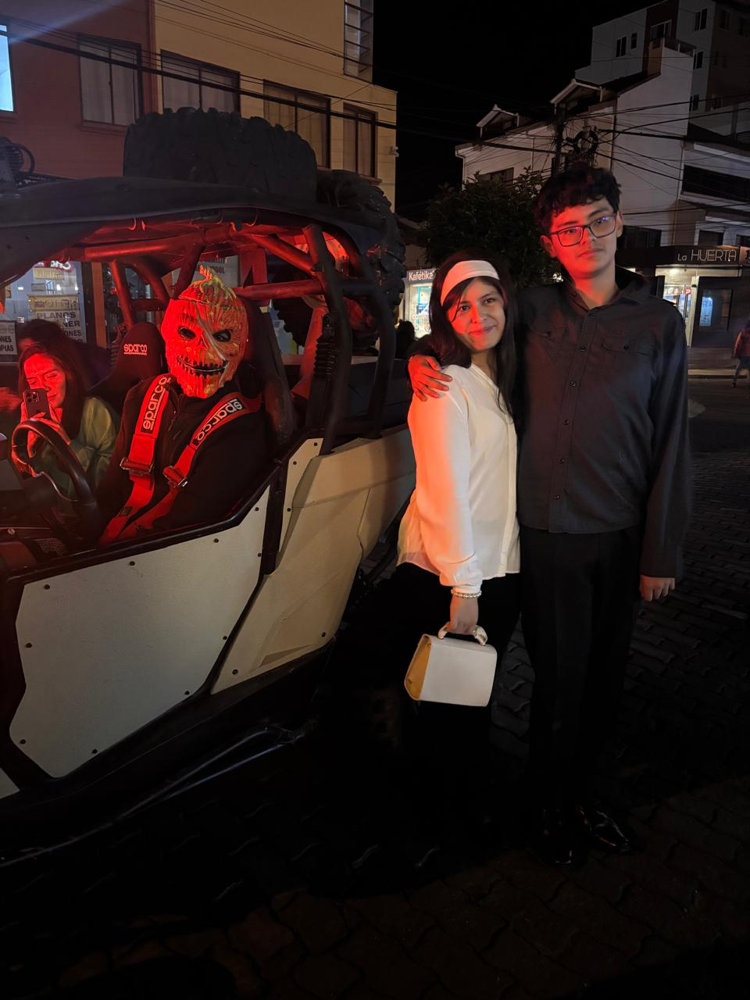
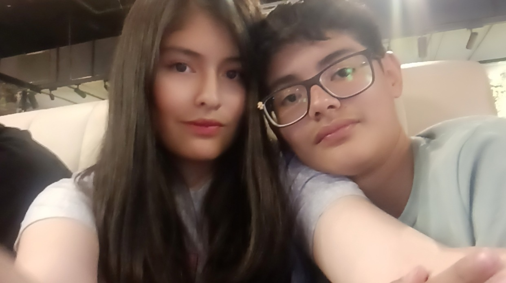
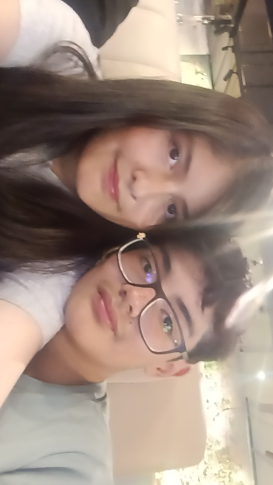
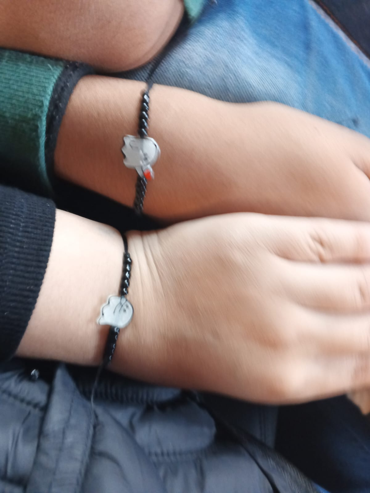
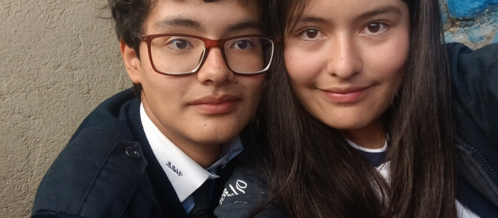

Mi persona favorita ♡
Catalina tiene una pequeña sorpresa preparada especialmente para ti.
Hecho con cariño por Catalina365 días de una historia muy nuestra.

♡ AMOR"Los mejores recuerdos son los que construimos juntos".
↓Cada segundo nos acerca a un momento especial...
365 días de una historia que apenas comienza.
Si pudiera guardar cada instante contigo, llenaría el mundo de recuerdos.

Mi persona favorita ♡

Ese día especial ✨

Siempre tú 💗

Un recuerdo más...
Toca cualquier fotografía para verla más de cerca. 💕
Cada historia tiene un comienzo. Esta es la nuestra.
Desde muy niños compartíamos el mismo colegio. Sin imaginarlo, nuestros caminos ya se habían cruzado mucho antes de que comenzara esta historia.
Hace casi dos años comenzamos a acercarnos más. Poco a poco compartimos conversaciones, risas y momentos que nos permitieron conocernos mejor.
A veces, las historias más bonitas comienzan de la manera menos esperada. Después de que nuestras mamás hablaran, llegó aquel encuentro en el bus que marcaría el inicio de algo especial. Ese día comenzó nuestra historia juntos.
Un año de experiencias, aprendizajes, sonrisas y recuerdos que hoy forman parte de nuestra historia. ¡Y esto apenas comienza!
Porque todavía quedan muchas cosas bonitas por descubrir...
Nuestra canción favorita
Catalina y Joaquín
Cada vez que la escuches, recuerda nuestra historia. 💗
Hay algo que Catalina quiere compartir contigo. 💗
Para mi Joaquín ❤️
¿Quién diría que después de tantos años compartiendo el mismo colegio, terminaríamos escribiendo nuestra propia historia?
Todo comenzó de una manera que quizás ninguno imaginaba. Poco a poco nos fuimos acercando, compartiendo momentos y conociéndonos de una forma diferente.
Y llegó el 10 de noviembre de 2025, ese día en el que decidimos comenzar esta aventura juntos.
Hoy miro atrás y me doy cuenta de que ya pasó un año desde aquel momento. Un año que forma parte de nuestra historia y que siempre tendrá un lugar especial para mí.
Quiero que sigamos creando recuerdos, riéndonos por cualquier cosa, compartiendo aventuras y disfrutando de cada pequeño momento.
No sé qué nos espera más adelante, pero sí sé que todavía tenemos muchas páginas por escribir.
Feliz primer aniversario, mi amor. ❤️
Con mucho cariño,
Tu Catalina. 💗
Que esta sea solamente la primera de muchísimas fechas que podamos celebrar juntos.